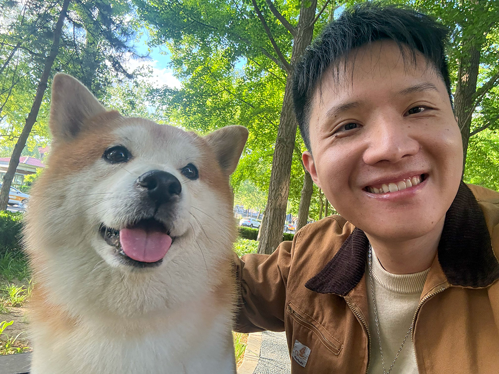

Xinlin Ge
I am a Ph.D. student in Learning Sciences at the University of Utah (UofU), fortunately advised by Prof. Chenglu Li. My research interests is the Human-centered AI-enabled Educational Systems Engineering, where I explore how to design, build and research on intelligent systems that responsibly enhance human learning. Prior to my Ph.D. journey, I earned my Bachelor's degree in Mathematics from Beijing Normal University (BNU) and my Master's degree in Mathematics Education from University College London (UCL).
Beyond academia, I bridge the gap between educational theory, industry practice, and frontline teaching. I am a passionate educator and have been teaching mathematics since 2016. Driven by the potential of AI in education (AIED), I previously led a data company in Shanghai, China, where we specialized in engineering and delivering high-quality math reasoning datasets for AI enterprises.

Personal
When not working, I love hanging out with friends and playing board games (Blood on the Clocktower is my absolute favorite). I also enjoy reading and cooking (Kung Pao Chicken and stir-fried tomatoes with eggs are my signature dishes). Music holds a special place in my heart; I love singing and playing the guitar because music truly has power. Lastly, I have made it a personal goal during my Ph.D. to hit the gym more often!
On a more personal note, embracing my identity as a gay man has been one of the most meaningful journeys of my life. Learning to accept and express my authentic self hasn’t always been easy, but it has taught me resilience, self-awareness, and empathy. While I’ve come a long way, I’m still learning, still growing, and still discovering who I want to become.
news
Launched a new version of my personal website. As I begin a new chapter, I hope to keep learning, exploring, and growing along the way.
Graduated from University College London with an M.A. in Mathematics Education. I’m deeply grateful to my thesis supervisors, Prof. Rachel Marks and Prof. Cosette Crisan , for their patience, support, and guidance throughout the journey. This experience helped me better understand the direction I want to pursue.
Graduated from Beijing Normal University with a B.S. in Mathematics and Applied Mathematics. I’m thankful to my advisors Prof. Qing Lu and mentors for their encouragement and support, which played an important role in shaping both my academic and personal growth.
Joined Yuanfudao as a Mathematics Competition Coach. This was my first experience in the education technology industry, and it gave me valuable opportunities to learn, grow, and better understand the impact technology can have on education.
Joined TAL Education (Xueersi Peiyou Beijing) as a Mathematics Competition Instructor. Teaching had always been something I cared deeply about, and this role marked the beginning of a journey that would shape much of my professional life.
contact
Email: gexinlindsk@gmail.com